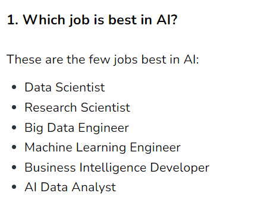
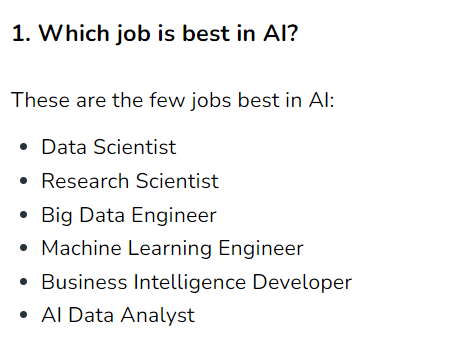
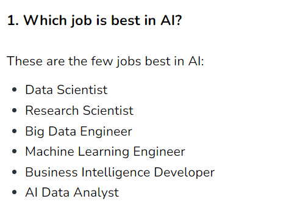

“'n Boer maak 'n plan” is a famous Afrikaans proverb that encapsulates the resourcefulness and ingenuity of South African farmers. In today's rapidly advancing world, where technology plays a pivotal role in driving progress, this age-old saying holds more relevance than ever. As South Africa seeks innovative solutions to address the challenges of food security, sustainability, and efficiency in the agricultural sector, the emergence of Artificial Intelligence (AI) promises to be a game-changer.
Now I know that this form of technology has only been shown in video games and television, but as times go on, it is becoming more of a reality. Let us first describe what AI is: AI, or Artificial Intelligence, refers to the development of computer systems that can perform tasks typically requiring human intelligence. It involves creating intelligent machines that can learn, reason, and make decisions based on data and patterns. AI includes techniques like machine learning, deep learning, natural language processing, computer vision, robotics, and expert systems. It aims to mimic human cognitive abilities and enable machines to understand, adapt, and perform specific tasks autonomously.
Now without further ado, let's get straight into the topic 'How AI will benefit the agriculture sector in South Africa.'
The idea of AI doing mundane work in the agriculture sector might still be new to the tongue, and many Greta Thunberg's would also want their say in this too, but perhaps a new form of technology would just be the new thing that South Africa needs. Let's look at the benefits:
These are just a few to mention, but again comes the question of how it would help South Africa and its people:
However, just like anything in the world, there are limitations and issues about AI in South Africa:
AI is a valuable tool for farmers in their daily agricultural activities, offering benefits like data analysis from various sources such as satellite images, weather patterns, and soil sensor readings. This data helps farmers make smarter decisions regarding irrigation, disease and pest management, and crop planting and harvesting. AI-powered drones and robots with sensors provide targeted information on crop health and soil conditions. Additionally, AI can predict crop yields, optimize resource management, and enhance livestock monitoring and supply chain management.
However, using AI in South African agriculture comes with certain risks. Accessibility and affordability issues may create a divide among farmers. Data privacy and security are concerns due to the large amounts of data AI relies on. Dependence on technology exposes farmers to potential failures, and skills and training are essential for effective AI use. Bias in AI algorithms and ethical considerations must be addressed, along with regulatory and legal challenges.
Despite these risks, AI offers numerous advantages to South African farmers, including data-driven decision-making, increased productivity and profitability, reduced manual labor, precise resource management, disease and pest management, and support for sustainable practices.
